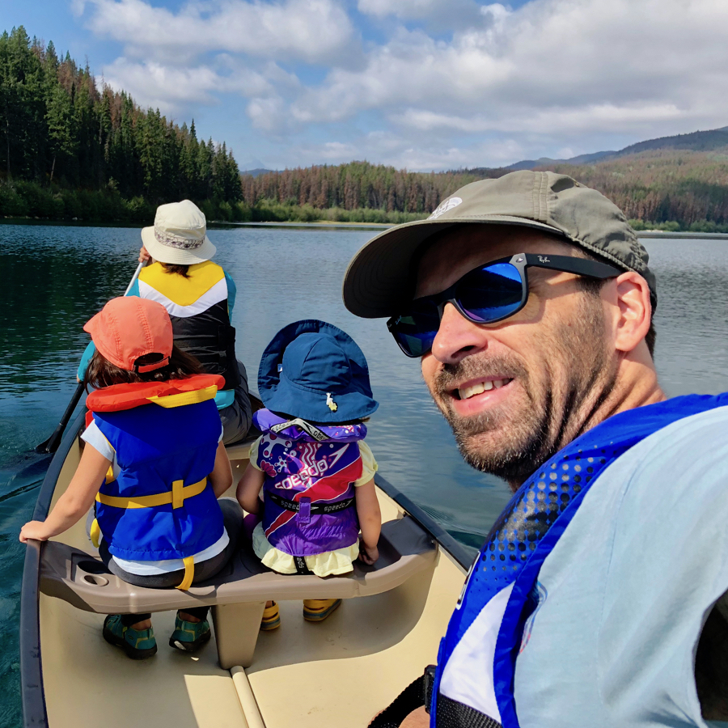

Department of Economics · University of Alberta
Sebastian Fossati
Associate Professor of Economics

About
I joined the Department of Economics at the University of Alberta after completing my PhD at the University of Washington in 2010. My research is in time series econometrics — unit root testing, forecasting, and business-cycle dating — and I apply these and other tools to questions in empirical macroeconomics, labour economics, and quantitative criminology. You can find my full record on the research page or in my CV.
Selected publications
-
2026
-
2026
-
2024
-
2016